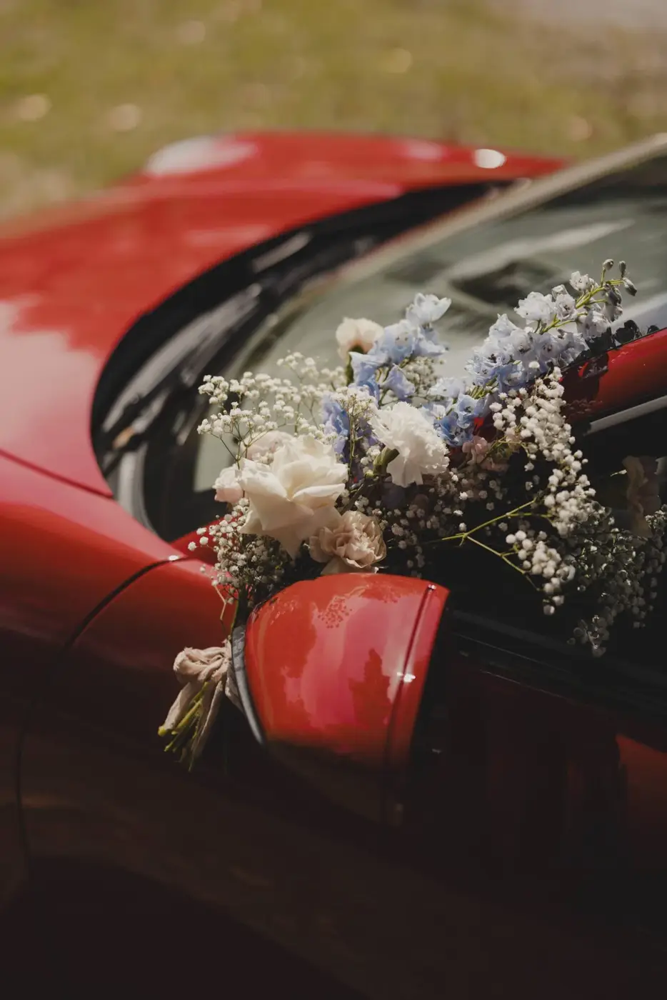
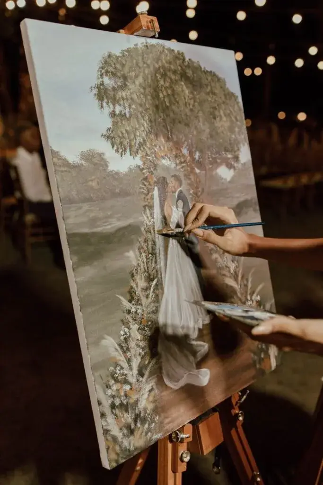
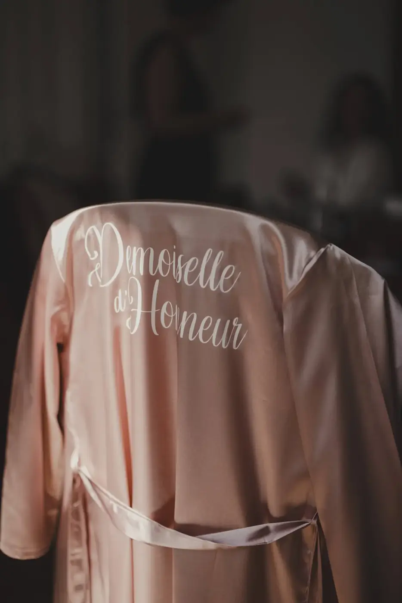
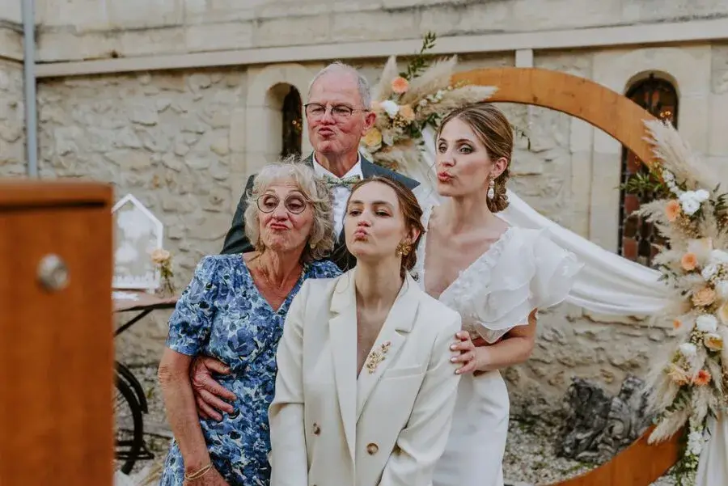

Personalisation has become the central element of weddings in 2026. Couples no longer want a formulaic or impersonal event. They want to live and offer an experience that is sincere, intimate and deeply connected to their story. The wedding becomes a true expression of the couple's identity, far from standardised models and trends applied without thought.
In the age of social media, inspiration is everywhere, but it can also lead to weddings that all look the same. Personalisation is precisely what lets you break away from these endlessly repeated references to create a unique event that has meaning and stands the test of time. It isn't about doing too much, but about getting it right, with intention and coherence.
Would you like your wedding to truly resemble you, without compromise, while keeping a natural elegance and a refined atmosphere? As a wedding planner, I work with couples who want to give meaning to every choice and imagine a personalised wedding, designed as a complete, harmonious experience.
The Bordeaux region, with its vineyards, wine estates and exceptional venues, offers the ideal setting for unique, authentic and timeless weddings.
A personalised wedding: much more than a trend
The personalised wedding isn't a passing fad. It is a real evolution in the way we celebrate love and commitment. Every element of the wedding becomes an opportunity to tell a story, convey an emotion and create a lasting memory.
A personalised wedding rests on an overall vision that blends aesthetics, emotion and experience. Choices are never made at random. The colours, materials, atmospheres and rhythms of the day are designed to reflect the couple's personality. This approach creates strong coherence and a fluid atmosphere in which guests feel fully immersed.
Unlike standardised weddings, the personalised wedding celebrates uniqueness, authenticity and emotion. Every detail has a precise intention and helps strengthen the bond between the couple and their guests.

Made-to-measure wedding outfits: expressing your identity
Wedding outfits are becoming true means of personal expression. In 2026, couples want to wear creations that tell their story rather than simply follow trends.
Personalising outfits comes through the choice of cuts, fabrics and details. Organic cotton, natural linen or recycled silk are part of a more conscious, responsible approach. Discreet embroidery, initials or meaningful dates add a strong symbolic dimension without ever being excessive.
These personalised outfits fit perfectly into the wedding's overall art direction, creating visual and emotional harmony throughout the day.



Handcrafted invitations: creating the first memory
The personalised experience begins as soon as the wedding is announced. The invitation is the first emotional contact with guests. It sets the tone, conveys an atmosphere and builds anticipation.
Handcrafted invitations are enjoying a real revival. Hand calligraphy, textured papers, delicate printing and careful finishes turn the invitation into a precious object. Every graphic choice is designed to reflect the couple's world and the atmosphere of the wedding.
Personalised digital elements complement this approach elegantly. Mini wedding websites, introduction videos and personalised RSVPs offer a smooth, modern experience while remaining intimate. Combining paper and digital strengthens the personalisation without diluting it.

A personalised wedding menu: telling a story through food
The wedding meal becomes a true culinary narrative. Personalising the menu turns this moment into a sensory and emotional experience.
Working closely with the chef is essential. Together, you can weave in childhood memories, unforgettable trips or reinvented family recipes. The menu then becomes a reflection of the couple's story.
The presentation of the meal, the pace of service and the food and wine pairings all play a full part in the overall experience.
In the Bordeaux region, this approach takes on a special dimension thanks to the richness of the local terroir and food culture.
Designing personalised experiences for guests
Personalisation truly comes into its own when it is designed with your guests in mind too. A successful wedding is not just something to look at, it is something to experience. Offering a personalised experience helps everyone feel welcome, involved and emotionally connected to your story.
Thinking about how guests are welcomed from the moment they arrive is essential. A personal note, gentle signage or a thoughtful touch linked to the venue and the season instantly creates a warm atmosphere. These first moments set the tone for the day and allow guests to slip naturally into the world of your wedding.
Personalisation can also come through shared moments. Offering conversation corners, comfortable seating or music suited to each part of the day lets guests enjoy the wedding at their own pace. The aim is to create a smooth, comfortable experience where everyone finds their place without pressure.
Entertainment works best when it is designed with subtlety. A memorable experience does not depend on piling up activities, but on how well they reflect the couple's identity. Entertainment linked to your story, your passions or your culture creates genuine emotion and brings guests closer together.
Personalisation also shows in the attention paid throughout the day. A menu adapted to dietary preferences, special care for children or elderly relatives, or moments dedicated to certain groups all strengthen the feeling of being truly considered.
Guest favours can also become an extension of your story. Choosing something useful, lasting or symbolic helps extend the wedding experience long after the big day. When it is thoughtfully personalised, this keepsake becomes a powerful emotional reminder rather than a simple accessory.
Finally, thinking about after the wedding is fully part of the experience. A personalised thank-you message, a shared memory or a small gesture sent after the event closes the celebration with elegance and emotion. This continuity strengthens the bond you have created and leaves a lasting impression on your guests.
Designing personalised experiences for your guests ultimately means creating a lively, sincere and deeply human wedding, where everyone feels invited to share far more than just a day: a true moment of life.

Tips for a successful personalised wedding
Personalisation truly comes into its own when it is designed with your guests in mind too. A successful wedding is not just something to look at, it is something to experience. Offering a personalised experience helps everyone feel welcome, involved and emotionally connected to your story.
Thinking about how guests are welcomed from the moment they arrive is essential. A personal note, gentle signage or a thoughtful touch linked to the venue and the season instantly creates a warm atmosphere. These first moments set the tone for the day and allow guests to slip naturally into the world of your wedding.
Personalisation can also come through shared moments. Offering conversation corners, comfortable seating or music suited to each part of the day lets guests enjoy the wedding at their own pace. The aim is to create a smooth, comfortable experience where everyone finds their place without pressure.
Entertainment works best when it is designed with subtlety. A memorable experience does not depend on piling up activities, but on how well they reflect the couple's identity. Entertainment linked to your story, your passions or your culture creates genuine emotion and brings guests closer together.
Personalisation also shows in the attention paid throughout the day. A menu adapted to dietary preferences, special care for children or elderly relatives, or moments dedicated to certain groups all strengthen the feeling of being truly considered.
Guest favours can also become an extension of your story. Choosing something useful, lasting or symbolic helps extend the wedding experience long after the big day. When it is thoughtfully personalised, this keepsake becomes a powerful emotional reminder rather than a simple accessory.
Finally, thinking about after the wedding is fully part of the experience. A personalised thank-you message, a shared memory or a small gesture sent after the event closes the celebration with elegance and emotion. This continuity strengthens the bond you have created and leaves a lasting impression on your guests.
Designing personalised experiences for your guests ultimately means creating a lively, sincere and deeply human wedding, where everyone feels invited to share far more than just a day: a true moment of life.
In short
In 2026, personalisation is becoming the true signature of contemporary weddings. It creates a unique, sincere and deeply human experience, where every choice and every detail carries meaning and tells your story.
A personalised wedding gives you the freedom to celebrate at your own pace, to choose elements aligned with your values and to turn every moment into a lasting memory. Far from fixed formulas or copied trends, it creates authentic emotions, for you and your guests, making the day immersive and warm.
Personalisation also lets you think of your guests in a subtle, thoughtful way, creating moments of sharing, meaningful touches and an atmosphere that reflects your world. Every detail, from the venue to the decor, from the menu to the entertainment, contributes to a coherent and memorable experience.
As a wedding planner, my role is to help couples make every element fall into place, so that their wedding in Bordeaux or in the most beautiful venues of the Gironde is elegant, harmonious and deeply personal.
Are you ready to imagine a wedding that truly resembles you, designed with intention, lived with intensity and leaving unforgettable memories for you and your guests?
Lovely Day Event offers several services
Wedding planning
I step in at every stage of your preparations and guide you through your choices, bringing ideas and suggestions so that your wedding looks like no one but you.
On-the-day coordination
I will be the conductor of your day, managing the suppliers, the set-up of your decor and the smooth running of this beautiful day.
Wedding design
Creative and passionate, I am a certified Wedding Designer and I create a scenographic atmosphere that matches the theme of your wedding. Styling is included in the Signature package, or offered as an add-on to on-the-day coordination.